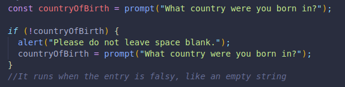
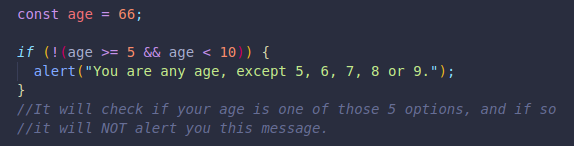
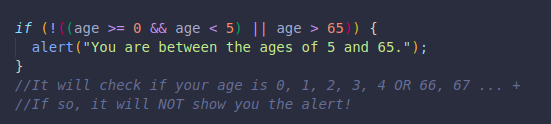

The logical operator NOT is represented by an excalamtion point, and basically makes everything the opposite of what it normally would be.
false
true
true
false
Here is an example:
If we do NOT get a truthy string, we will tell the user to enter a valid country.An empty string would be falsy or false.
It can also be applied when trying to exclude a certain group, other than targeting all the other groups except one of them.
Here we are targeting all age groups except ages 5, 6, 7, 8 and 9.
Or here where we exclude ages 0 to 4 and 66 or older.
